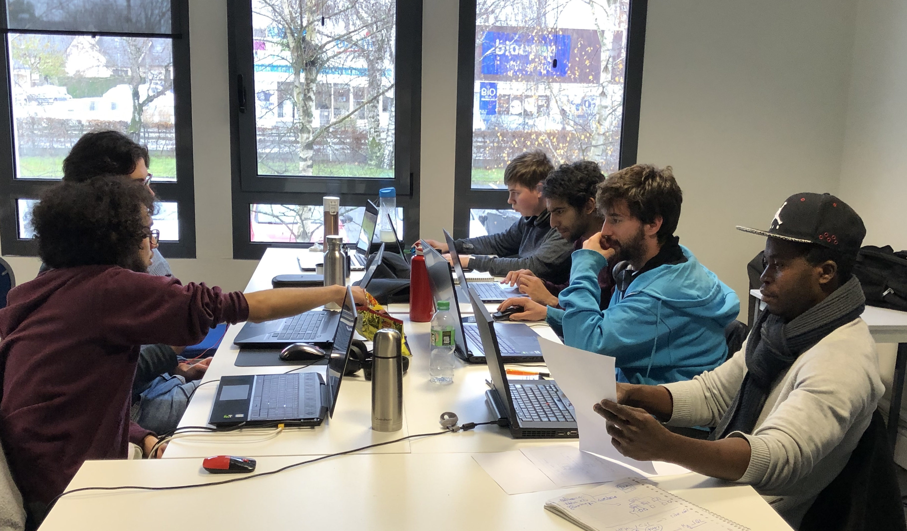

Création d’une Application Mobile :
Fil d’actualités Inter-Campus
Pourquoi avons-nous choisi Angular ?
Il existe de nombreux frameworks JavaScript très populaires aujourd’hui : Angular, React, Ember, Vue… les autres frameworks marchent très bien, ont beaucoup de succès et sont utilisés sur des sites extrêmement bien fréquentés, React et Vue notamment.
Angular présente également un niveau de difficulté légèrement supérieur, car on utilise le TypeScript plutôt que JavaScript pur ou le mélange JS/HTML de React.
Ainsi, quels sont donc les avantages d’Angular ?
Angular est géré par Google — il y a donc peu de chances qu’il disparaisse, et l’équipe de développement du framework est excellente.
Le TypeScript — ce langage permet un développement beaucoup plus stable, rapide et facile.
Le framework Ionic — le framework permettant le développement d’applications mobiles multi-plateformes à partir d’une seule base de code — utilise Angular.
Les autres frameworks ont leurs avantages également, mais Angular est un choix très pertinent pour le développement frontend.
Angular présente également un niveau de difficulté légèrement supérieur, car on utilise le TypeScript plutôt que JavaScript pur ou le mélange JS/HTML de React.
Ainsi, quels sont donc les avantages d’Angular ?
Angular est géré par Google — il y a donc peu de chances qu’il disparaisse, et l’équipe de développement du framework est excellente.
Le TypeScript — ce langage permet un développement beaucoup plus stable, rapide et facile.
Le framework Ionic — le framework permettant le développement d’applications mobiles multi-plateformes à partir d’une seule base de code — utilise Angular.
Les autres frameworks ont leurs avantages également, mais Angular est un choix très pertinent pour le développement frontend.


Session de travail en groupe, dans le cadre d'un projet validant notre premier trimestre.